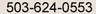

Group Classes for Adult and Teen Flutists
FLUTE BOOT CAMPS For TEENS
Fourth Year
Eastside: (2505 NE 102nd, Portland, OR 97220): July 12 - 16, 2010
Westside: (9845 SW Walnut Pl., Tigard): July 19 - 23, 2010
2010 Flute Boot Camp Flyer
2010 Flute Boot Camp Registration Form for either session.
Flute Boot Camp 2007, Dawn Weiss, center.
Flute Boot Camp is a week-long day camp intensive for teens, raising performance skills and musical knowledge in a fun, supportive environment. Master Classes cover a wide range of information. Flutists participate in small and large ensembles, culminating in a Gala Recital on Friday Night. There are two weeks to choose from in July, for students currently in grades 7–12. This camp runs from Monday–Friday 10 AM – 3 PM.
We work on a wide range of skills and concepts. Students are auditioned on the first day of camp and placed into one of three ensembles. Those ensembles prepare pieces for the Friday night Gala Recital. Besides ensembles, we work on tone, technique, performance issues, stretching, breathing, theory, etc. The students work extremely hard, practicing more than usual, in order to be ready for the big show on Friday night. Most students love the camp for the fun and intensity.
Registration deadline, May 28, 2010.
- INSTRUCTORS:
- Dawn Weiss, Principal Flute, Oregon Symphony (1980-2005)
- Carla Wilson, Third Flute/Piccolo, Oregon Symphony
- Denise Westby, Flute Instructor, Linfield College
Questions and further Information? Email Denise Westby at or by phone:  or visit the Flute Alliance.
CAMPER'S COMMENTS:
"This camp improves the finer points of flute playing." Anna D., Lincoln High School
"I was able to learn how to make more of my practice time at home." Brenna N. Wilson
High School
"Almost all of the 'camp' experiences I have had through the years have been horrible,
but FBC has been very fun, organized, and I learned a lot!" Martha B., homeschooler
"Challenging, but worth it." Martin B., Wilson High School
"This camp challenged me. I didn't know what practicing was until this week." Amanda
S. Tualatin High School
"I really enjoyed the camp. My favorite band camp by far. I have more confidence
and I met some really great people." Candace H., Arts and Communication Magnet Academy.
FLUTE GROUP CLASSES FOR ADULTS
"...thank you, again, for putting this (Amateur Adult Flutists: 30+) together. Your supportive
approach alongside your specific feedback was a real shot in the arm. I've
decided to keep on playing and get back to a teacher...."
Regards
Shelby A., Nov. 2008
MASTERCLASS FOR ADULTS 30+
Watch here for new dates and information
Musicians Union Local 99
325 NE 20th
Portland, OR 97232 (on NE 20th, 1/2 block So. of Sandy Blvd. - back door)
What to bring: Your flute, music you are working on, questions, willingness to participate and share ideas.
Topics of Focus: Tone, technique, phrasing, intonation, articulation, posture, stage presence, practice and performance strategies, your interests.
"Dawn - Enjoyed the class. Thank you for sharing your own performing experiences with us. Chris [W]"
PARTICIPANTS: $25
*AUDITORS: $15 *I highly recommend that everyone participate! We all have a lot of fun, so give it a try.
"What a PLEASURE meeting you! I thought your presentation, answer to questions, and explanations were amazing. Glad I took notes as I truly learned a lot from you.
Just thought you'd like to know....
Love, Nancy." Fall 2008
BREAKAWAY FLUTE PLAYERS' VACATION
Watch here to keep current! BREAKAWAY
Questions? Contact Denise Westby triowest@comcast.net or by phone: .
Past 2009 Breakaway Vacation Brochure